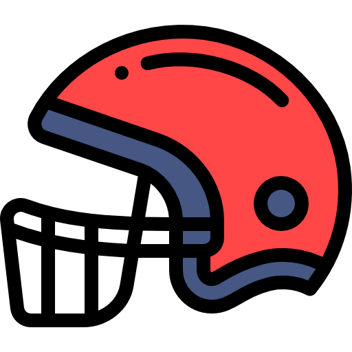

Tom Brady, el mejor jugador de la historia de la NFL, ha confirmado lo que era un secreto a voces. A los 44 años y tras 22 temporadas se retira. Mientras ninguna franquicia ha ganado más de seis Super Bowls, el 'quarterback' de los Tampa Bay Buccanneers se va con siete anillos, el récord de una competición que pierde a una leyenda viva.
Goat
El camino de TB12 hacia la gloria no fue sencillo. Fue seleccionado en el puesto 199 del 'draft' del año 2000. "Pobre complexión atlética, carece de gran presencia física y fuerza, no tiene movilidad para quitarse la presión, no tiene un brazo fuerte", decía un informe poco halagüeño y menos visionario. Pero los New England Patriots le dieron una oportunidad. El primer año se lo pasó en el banquillo, pero en 2001 la lesión de Drew Bledsoe le abrió las puertas de la titularidad y el resto es historia. Ese misma temporada condujo a su franquicia a los Patriots hacia su primer título, y repitió en 2003, 2004, 2014, 2016 y 2018.
Mejores jugadores de la historia
24/11/21
10 Jim brown (1957-1965)
9 Joe Greene (!969-1981)
8 Terry Bradshaw (1970-1983)
7 Walter Payton (1975-1987)
6 Joe Montana (1979-1994)
5 Lawrence taylor (1981-1993)
4 Jerry Rice (1985-2004)
3 Barry Sanders (1989-1998)
2 Peyton Manning (1998-2016)
1 Tom brady (2000-2022)
Mejores jugadores de la historia
Esta es una lista de los 10 mejores jugadores en la historia de la NFL, ya que so los jugadores que han tenido los mejores records y son los jugadores mas dominantes de la historia
El mejor jugador
24/11/21
" title="YouTube video player" frameborder="0" allow="accelerometer; autoplay; clipboard-write; encrypted-media; gyroscope; picture-in-picture" allowfullscreen>
Ranking de jugadores (2020)
En este video nos explican cuales son los 10 mejores jugadores en la historia de la NFL
Tom fue escogido por los New England Patriots en la sexta ronda del Draft de la NFL del año 2000 en el puesto 199 global. Seis quarterbacks fueron seleccionados antes que él: Chad Pennington, Giovanni Carmazzi, Chris Redman, Tee Martin, Marc Bulger y Spergon Wynn. Brady y su familia pensaban que saldría elegido en la segunda o en la tercera ronda y se mostraron especialmente decepcionados con que los San Francisco 49ers, el equipo del que era seguidor cuando era niño, apostaran por Carmazzi en lugar de por él. La elección de Brady por parte de los Patriots está considerada como el mayor robo de la historia de la NFL. Robert Kraft, dueño de la franquicia de Massachusetts, declaró en 2012 que en su primer encuentro con él, este le dijo «Soy la mejor decisión que esta organización ha tomado jamás».
THE GOAT
Brady fue promovido a quarterback titular el 23 de septiembre de 2001, después de que Drew Bledsoe sufriese una hemorragia interna al ser placado por el linebacker de los New York Jets, Mo Lewis, durante el encuentro de la segunda semana.11 En sus dos primeros juegos, tuvo índices de pasador poco espectaculares de 79.6, en la victoria 44–3 sobre los Indianapolis Colts, y de 58.7, en la derrota 30-10 sobre los Miami Dolphins.12 Brady jugó mucho mejor en el segundo partido contra los Colts, con un índice de pasador de 148.3 en la victoria por 38–17.12 Los Patriots ganaron once de catorce juegos con Brady como titular, calificando a postemporada. Brady terminó con 2843 yardas, con dieciocho touchdowns, y doce intercepciones, siendo seleccionado para el Pro Bowl.
El mejor de la HISTORIA
En el primer juego de postemporada de su carrera, contra los Oakland Raiders, lanzó para 312 yardas, y llevó a los Patriots a superar un déficit de diez puntos en el último cuarto, logrando empatar el juego y extenderlo a tiempo suplementario, donde ganaron con un gol de campo de Adam Vinatieri.
En el juego de campeonato de la AFC, contra los Pittsburgh Steelers, se lesionó la rodilla, y tuvo que ser substituido por Bledsoe. Los Patriots ganaron el juego y consiguieron su boleto al Super Bowl XXXVI contra los Rams
tom brady
semana 8
12/05/22
records en el superbowl
Tom Brady es el máximo ganador de nombramientos como MVP de Super Bowl con cuatro. Con el triunfo del Super Bowl LV, el QB de los Buccaneers es el jugador con más títulos de campeón en la historia de la NFL (7), además de contar con los récords de más juegos de Super Bowl jugados (10), más veces como titular (10), más victorias como QB (7) y por supuesto, el del QB más viejo en ganar este partido (43 años superando a Peyton Manning con 39 años y 320 días).
campo
El Super Bowl LVI tendrá varios récords a superar. De entrada, nos olvidamos de la mejor asistencia con 103 mil 985 personas en la edición XIV, pero el de la audiencia sí será atractivo, ya que el récord por ahora pertenece al Super Bowl XLIX entre Seahawks y Patriots que congregó a 114.5 millones de espectadores ante el televisor.
Tom Brady de los Buccaneers ganó el Super Bowl LV uniéndose a Ben Roethlisberger, Eli Manning y Aaron Rodgers como los únicos quarterbacks en ganar un título jugando todos los playoffs como visitantes. Además, se unió a Peyton Manning como los únicos QB en ganar un Super Bowl con diferentes franquicias.
 El mejor jugador
El mejor jugador

 Paginas oficiales Sitios web
Paginas oficiales Sitios web